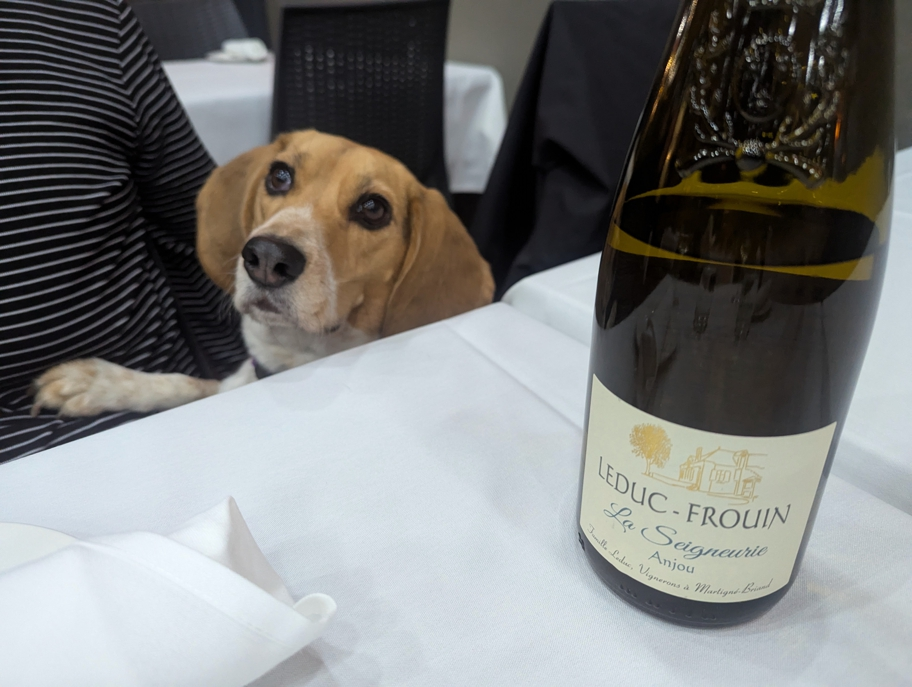

<--Previous Up Next-->

The trail ended at Pier 23. The namesake restaurant closes early, so we only had time for beer and fries there before moving on to Sam's for dinner.
sanfrancisco Halley Beagle